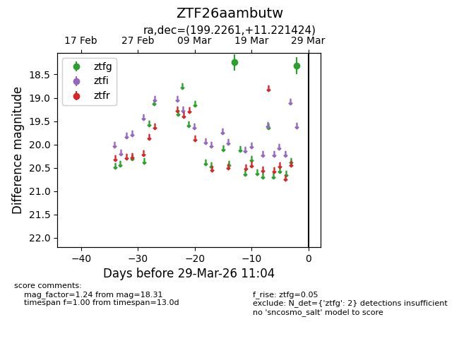
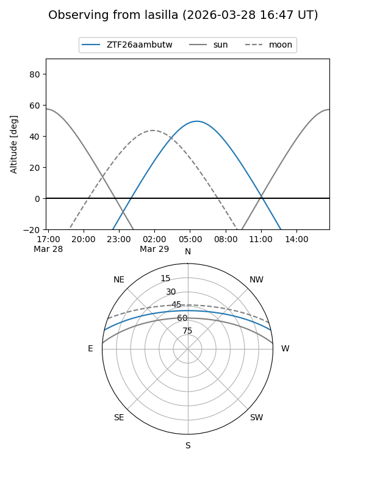
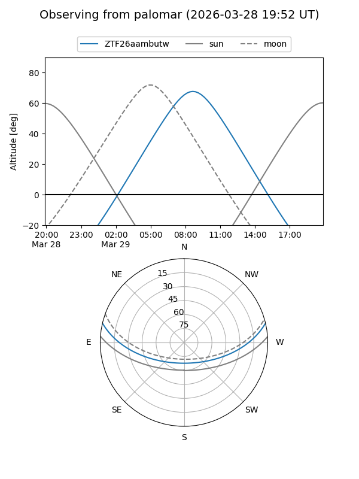

ZTF26aambutw
Target ZTF26aambutw at 2026-03-29 11:07
Aliases and brokers:
FINK: link
Lasair: link
ALeRCE: link
alt names
ZTF26aambutw (ztf,fink_ztf)
Coordinates:
equatorial (ra, dec) = 199.2261,+11.22142
equatorial (HMS+DMS) = 13:16:54.27,+11:13:17.12
galactic (l, b) = (324.7778,+73.00391)
Flags:
Photometry:
last ztfg=18.31
2 ztfg detections
Lightcurve

Visibility


Additional plots